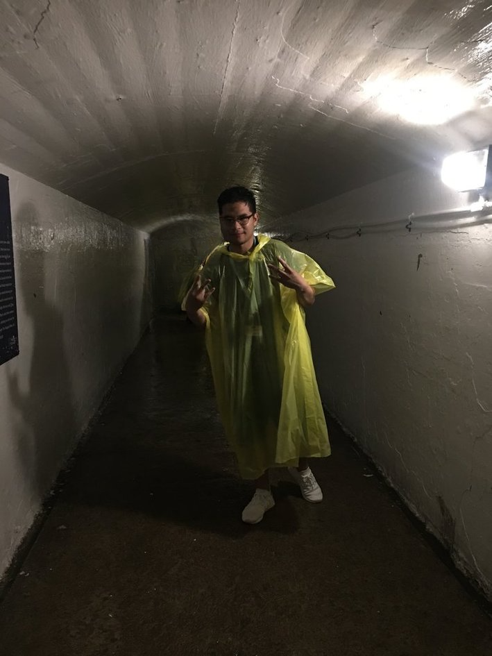

Jul 26 2019 — Niagara Falls
Our three-day trip to Niagara Falls back in July 2019 was an absolute blast, even if the details of where we stayed have completely faded from memory! We packed a lot into a short amount of time, braving the usual tourist chaos.
Trip Highlights
- Getting up close with the falls on the iconic cruise.
- Exploring the tunnels behind the water in our yellow ponchos.
- Go-karts, flower gardens, and catching the evening fireworks show.
We didn't snap photos of everything—sometimes you just have to live in the moment! But here are a few captures from our time there.
Group shot in the Niagara area.
Racing around the go-kart track.

Tunnels behind the falls in our ponchos.
Dimaano Boys jump shot.